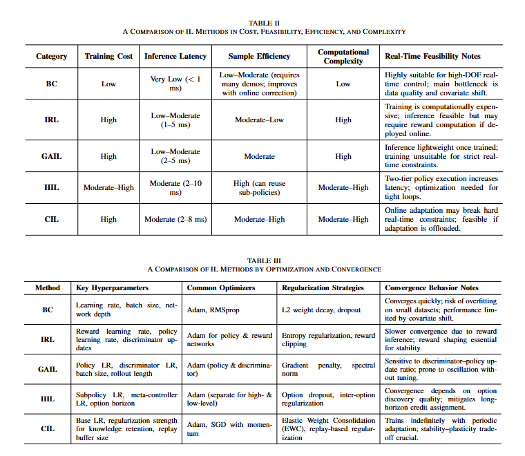
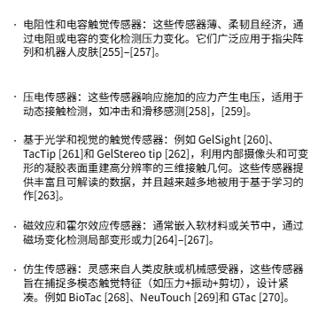

阅读综述 模仿学习如何实现灵巧操作
灵巧操作指的是机器人手或多指端执行器通过精准协调的手指动作和自适应力调制，熟练地控制、重新定向和控物体的能力，实现了类似人类手部灵巧度的复杂互动。随着机器人学和机器学习的最新进展，这些系统在复杂且无结构环境中运行的需求日益增长。传统的基于模型的方法由于高维度和灵巧作的复杂接触动态，难以在任务和物体变异中推广。尽管像强化学习（RL）等无模型方法展现出潜力，但它们需要大量训练、大规模交互数据以及精心设计的稳定性和有效性的奖励。模仿学习（IL）提供了一种替代方案，使机器人能够直接通过专家演示获得灵巧的作技能，捕捉细致的协调和接触动态，同时绕过显式建模和大规模试错的需求。本综述概述了基于模仿学习的灵巧作方法，详细介绍了最新进展，并解决了该领域的关键挑战。此外，还探讨了提升 IL 驱动灵巧作的潜在研究方向。我们的目标是为研究人员和从业者提供这一快速发展领域的全面入门。
近年来，模仿学习（IL）的快速发展，旨在通过观察和模仿人类或其他智能体的行为来获取知识，推动了计算机图形学和机器人学的显著进展。作为一种直观的方法，赋予机器人人类先验知识，特别是在与物体交互和理解场景方面，IL 在使机器人以类人灵巧度完成任务方面表现出卓越表现。在强化学习（RL）被采用之前，关于灵巧作的研究就已获得广泛关注，该研究通过与环境的迭代交互和基于奖励的反馈机制优化行为策略。传统方法鼓励机器人通过建模领域动态和应用最优控制方法来获得灵巧的作技能。这些方法理论上合理，但高度依赖世界模型的忠实度。
具体来说，第一步是收集专家演示数据集，其中包含由人类或训练有素的智能体执行的作任务轨迹。机器人以这些轨迹作为学习任务行为的参考。为确保一致性，最好在数据收集和执行阶段使用相同的机器人。然而，这种实现并不能促进异构机器人系统之间的数据共享。一种解决方案是将原始作手的轨迹映射到目标机器人，这一过程称为重定向。尽管如此，人类作机器人进行数据收集的过程仍然耗时且劳动力密集，构建大规模数据集。为解决这一问题，研究人员采用了计算机视觉的姿态估计技术，将人手映射到机器人手，有效降低了演示数据收集的门槛。此外，数据集增强增强了向新对象和场景推广的能力，促进了数据集的扩展。
IL 的方法可大致分为若干子类，包括行为克隆、逆强化学习（IRL）和生成对抗性模仿学习（GAIL）。行为克隆通过 SL 技术直接将观察到的行为映射到代理的行为。相反，IRL 旨在推断驱动演示者行为的底层奖励结构，使代理能够相应地优化其行为。GAIL 采用对抗训练技术，通过区分专家行为和代理行为来改进模仿策略，从而精炼代理准确复制期望行为的能力。
在 IL 的背景下，任务分解通常通过时间抽象实现，通常通过选项发现或层级策略结构等技术实现。
时间抽象使智能体能够通过时间扩展的动作序列做出决策，从而加速学习并简化复杂任务。选项发现指的是自动识别和构建这些时间抽象（称为选项）的过程，这些抽象包括内部低层策略、启动集和终止条件。选项框架通过将选项视为时间扩展动作，推广了传统动作概念，允许在多个时间尺度上进行规划。选项批评架构及其变体被广泛采用，用于自动从演示数据中提取选项，然后通过高层策略调度，以有效组织任务的时间结构。例如，DDCO 通过专家演示自主发现并学习连续动作空间中的层级选项，实现无监督任务分解和层级模仿学习，用于机器人控制。
我们将基于 IL 的灵巧作方法分为四类：（1）行为克隆，（2）逆向再生成强化学习，（3）生成对抗性模仿学习，以及其他扩展框架，包括（4）层级模仿学习和（5）持续模仿学习。
1. 行为克隆 (BC)
1.1 描述
行为克隆（BC）指的是通过直接从已展示的状态-动作对学习来复制专家行为。具体来说，BC 的特点是（1）监督式学习范式，（2）直接从状态映射到动作，不依赖奖励信号或探索，这在强化学习中是典型的。
1.2 挑战与对策
BC 模型的训练数据通常来自针对特定任务的专家演示。因此，当智能体在训练中遇到未被察觉的状态时，可能会产生与专家行为相悖的行为，导致任务失败。在顺序决策过程中，即使是每一步与专家行动的微小偏差也会随着时间累积，形成所谓的“复利误差”问题。这一问题在灵巧作任务中尤为明显，因为动作空间维度高且任务成功与预测动作轨迹一致性之间存在强烈依赖关系。为减少灵巧作中的复合错误，Mandlekar 等人提出了一个层级框架，将不同任务交叉点的示范轨迹分割，并重新组合以合成未见任务的轨迹。同样，赵等人通过考虑与高维视觉观察的兼容性来解决这个问题。他们提出不逐步预测动作，而是预测整个动作序列，从而缩短有效决策时间并减少复利误差。
BC 的另一个挑战是其多模态数据建模能力有限，这在从真实环境中收集的人类演示中很常见。为克服这一限制，提出了多种建模方法。
2. 逆向强化学习 (IRL)
2.1 描述
逆向强化学习（IRL）颠覆了传统的强化学习框架，后者专注于学习策略以最大化预定义的奖励函数。相反，现实学习旨在推断最能解释一组专家演示的底层奖励函数。
2.2 优势与局限
IRL 使机器人能够泛化复杂行为并适应多样化环境，而无需手动设计的奖励函数。这一能力在灵巧作场景中尤为宝贵，尤其是在奖励指定具有挑战性或不切实际的场景中。尽管有这些令人期待的发展，最先进的 IRL 方法仍面临若干局限。主要挑战之一是准确估计奖励函数，尤其是在高维动作空间或反馈信号稀疏的环境中。此外，IRL 方法通常依赖大量专家演示数据，这在实际中存在限制，因为数据收集成本和时间高昂。
3. 生成对抗性模仿学习 (GAIL)
生成对抗模仿学习（GAIL）将生成对抗网络（GAN）框架扩展到 IL 领域。它将模仿过程表述为生成器与判别器之间的双人对抗游戏。生成器对应于一个策略 π，旨在产生与专家演示非常相似的行为，而判别器 D(s, a) 评估状态-动作对 (s, a) 是否源自专家数据 M，还是由 π 生成。通过这种对抗性训练过程，GAIL 通过专家演示有效地学习复杂行为，而无需明确恢复奖励函数。
4. 层级模仿学习 (HIL)
层级模仿学习（HIL）是一个 IL 框架，旨在通过分解复杂任务到层级结构中来处理它们。HIL 通常采用两层层级结构，其中高层策略负责根据当前状态和任务需求生成一系列子任务或原语，底层策略执行子任务以实现整体目标。这种层级分解通过分离决策和控制，使得更有效地处理长视野和复杂任务。然而，大多数当前方法仍依赖手动设计的层级结构，这限制了非结构化或动态环境中的自主性。自动层级发现方法，如无监督技能分割或基于对比学习的子任务发现，对于使机器人能够自主识别可重复使用技能并调整层级以适应新任务至关重要。此外，在需要更新或扩展技能库时，尤其是在不断变化的任务条件下，确保其稳健性和连续性仍是一个未解之谜。
5. 持续模仿学习 (CIL)
持续模仿学习（CIL）将持续学习与 IL 结合，使机器人能够从专家演示中持续习得和适应新技能，同时避免在适应动态环境中的新任务时遗忘已学知识。具体来说，在初期阶段，代理通过专家演示学习基本技能。在后续阶段，智能体逐步积累知识，适应新的任务或环境，并降低遗忘已获得技能的风险。
6. 模仿学习方法的比较分析

7. 灵巧操作的末端执行器 (END-EFFECTORS)
在灵巧操作中，末端执行器通常分为两指抓握器、多指拟人手和三指机械爪。
7.1 双指传统抓取器 (Two-fingered Traditional Gripper)
双指握把因其可靠性、简便性和易于控制而被广泛使用。通常由单个执行器和一个方向度驱动，成本效益高，适合需要一致性的重复性任务。近期工作通过大规模仿制数据集进一步扩展了抓钳能力。
尽管取得了这些进步，双指握把在灵巧作方面仍然存在根本限制，这需要在手内物体中重新配置。其结构简单且缺乏内部景深，限制了抓握后的调整。此外，与人手的形态差异阻碍了演示中的学习，并阻止复制类人手部动作。
7.2 多指拟人手 (Multi-fingered Anthropomorphic Hand)
为了克服双指抓握器的灵活性限制，机械手的人类形态已被广泛开发出来。这些拟人化的手更好适合与为人类设计的物体和环境互动，它们通常可根据传动机制分类——腱驱动、连杆驱动、直接驱动和混合系统——这些机制从根本上影响其性能特性。
- （1）肌腱驱动方法：肌腱驱动的手通过钢索传递来驱动关节，模仿人体肌腱。这种设计使得紧凑的结构、多景深和高灵巧度成为拟人化手部发展的常见选择。为了适应高景深，执行器通常远置于前臂。
- （2）连杆驱动方法：连杆驱动的手部使用刚性机械连杆用于控制关节运动，提供高精度、重复性和坚固性。与肌腱驱动设计相比，它们通常提供更少的景深，但更适合更简单、更可靠的驱动。因此，大多数商业义肢和机械手都采用了这种机制。由于空间限制和对紧凑的需求，大多数连杆驱动指状机由单电机驱动，主要分为两类：单深度耦合型和多深度驱动欠致动型。
- （3）直接驱动方式：直接驱动手通过将执行器直接连接到关节，消除中间传动。这简化了机械结构，同时仍允许高可作的景深，类似于肌腱驱动设计。
- （4）混合传输方法
7.3 三指机器人爪：权衡方案
拟人化手部设计的多样性，很大程度上源于机械简洁与灵巧能力之间的根本权衡。虽然人手拥有超过 20 个景深，但机械上复制这种复杂性仍然不切实际。更高的灵巧度通常会增加结构和控制的复杂度、成本以及失效风险，限制了高景深手在实际应用中的可行性。 作为极简的双指抓握器和复杂的多指拟人化手之间的折中，三指机械爪提供了一个实用的中间地带。虽然解剖学上不像人类，但三根手指足以执行常见的握把类型，如圆柱形和球形力量握持，并能支持部分手握作任务。
7.4 灵巧末端执行器上的触觉传感器
触觉感知对于增强机器人端执行器的感知和控制能力非常重要，尤其是在需要精细接触互动、顺从和力控的灵巧作任务中。尽管以往的端效应器如双指夹具和平行下颌机构通常仅依赖视觉或位置反馈，现代多指灵巧手正日益采用高分辨率触觉传感器，以实现在非结构化或动态环境中更稳定和多功能的作。通常，触觉传感器可以直接测量接触力、压力分布、滑移、表面纹理，有时甚至温度或材料性质。它们通常安装在机器人手的指尖、指骨或掌心表面，支持反馈丰富的控制策略，如力调制、防滑和自适应抓握。

7.5 端效应器设计对模仿学习性能的影响
虽然此前研究主要聚焦于算法创新，但末端执行器形态、驱动和传感器配置对 IL 性能的影响关注相对有限。这些因素通过以下机制显著影响数据效率、策略泛化和任务成功率。
- （1）形态学：高景深手（如影手，20+ 景深）可以复制精细的人类作，如指尖控制，但它们会增加动作空间的维度，导致 IL 中严重的稀疏性问题。RH20T 数据集显示，高景深手部的演示数据需求呈指数增长。相比之下，三指抓握器（如 DoraHand）在降低策略学习复杂度时，在跨域任务（如 BridgeData V2）中，在一定程度上牺牲了灵活性，实现了更好的零射值泛化。具有几何一致性的拟人手（例如 ILDA 手）与人体演示者工作空间保持一致，减少了跨域映射错误。Antotsiou 等人强调，人手与机器人手在形态、自由度和关节约束上的差异会放大重新定向误差，从而提高任务失败的可能性。
- （2）驱动
- （3）传感器配置
8. 数据获取与系统实现
本节讨论了灵巧作的两种主要方法：通过远程作获取演示数据，以及直接从演示视频中学习。远程作促进了对机器人系统的直接控制，利用人类专业知识学习复杂的作任务，而基于视频的学习则利用丰富的视觉数据，实现从自然人类演示中自主习得技能。这些方法共同解决了在不同场景下教授机器人细粒度作行为的挑战。本节进一步讨论了支持模仿学习框架的数据集和基准，这些框架支撑着这些方法论。
远程作系统为人机协作提供了强大的界面，使其直接使机器人行为符合人机智能，即“人机”参与“。这种方法非常直观，因为人类丰富的知识和经验使他们能够在复杂的场景中对各种任务做出明智判断，并能迅速根据反馈调整策略。由于这种可用性，远程作被广泛应用于各个领域。此外，通过收集机器人在远程作期间的状态和相应动作数据，可以构建实现端到端 IL 的数据集。通过演示视频学习灵巧作技能，利用丰富的视觉数据教导机器人复杂行为，提供了有前景的远程作替代方案。与直接控制不同，基于视频的学习使机器人能够观察人类专家在多样且无结构的环境中执行任务，捕捉丰富的上下文和时间信息。计算机视觉和表征学习的进步促进了从原始视频中提取有意义特征。
8.1 灵巧操作的远程操作系统
典型的远程作系统由两个主要组成部分组成：本地站点和远程站点，如图 5 所示。本地站点配备人工操作员和一套交互式输入输出（I/O）设备。输出设备提供远程机器人及其周围环境的实时状态，而输入设备则允许操作员以多种形式下达指令，从而控制远程机器人的作。远程站点主要包含机器人本身，配备了多种传感器以收集其状态及周围环境的感知。在接收到人类的遥控作指令后，机器人可以执行相应的作并完成任务。
8.2 基于视觉的远程作系统
人手与机器人手的形态差异可能阻碍作者直观控制机器人。针对此，秦氏等通过构建一只定制的机器人手，建模了人体手的具体形状，开发了一个用户友好的界面。使用这只定制机器人手进行的演示可以直接传递给任何灵巧的机器人手。（能否不要定制，从而增强泛化性？？）
8.3 动作捕捉手套
动作捕捉系统通常采用稳定的硬件设备，如多摄像头配置，包括标记器、IMU 传感器和 RGB-D 摄像头。这些设备对光照、遮挡和复杂背景的变化具有强劲性。动作捕捉手套通过传感器直接收集人手运动数据，实现理想的实时性能，显著提升远程作的数据收集效率。
8.4 VR/AR 控制器
VR 设备通常包括头戴显示器、追踪系统和输入设备。头戴式显示屏通过高分辨率屏幕和头部运动追踪，提供沉净式视觉体验。追踪系统捕捉用户的动作，确保虚拟环境中的互动与现实世界的行为相符。输入设备，如控制器或手套，促进用户在虚拟空间中的互动。
8.5 外骨骼与双侧系统
上述方法主要在笛卡尔坐标下作机器人的末端执行器。虽然设定机器人的端效器位置很方便，但也存在缺点。对于具有多个景深的机器人，需要计算量较大的逆运动学（IK）计算，这在实时控制场景中可能存在问题。这些复杂性可能导致响应延迟并影响作精度。此外，运动轨迹中的奇点可能导致 IK 解不确定或不存在，从而导致控制失败。在接下来的章节中，我们将讨论旨在同步人与机器人在关节空间中运动的研究。